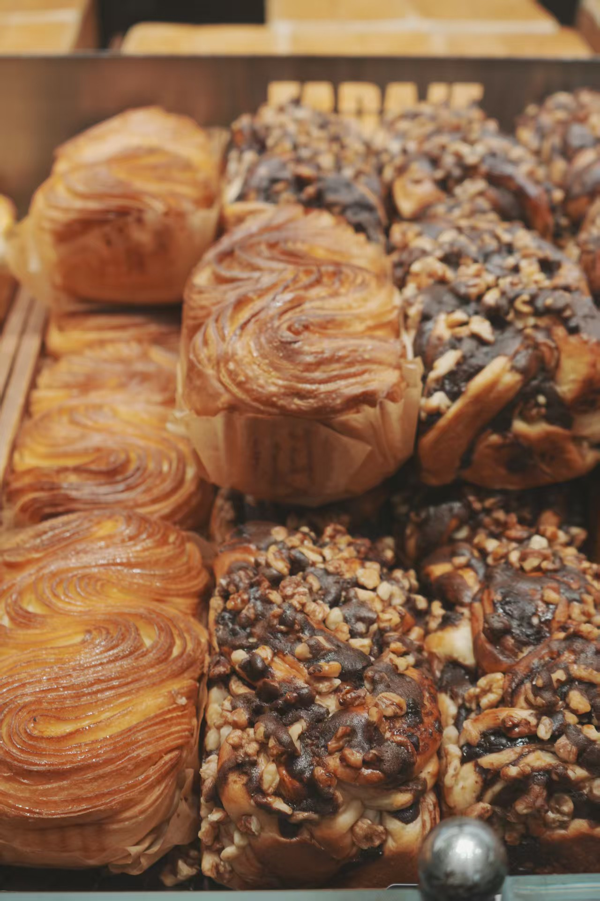

ABOUT JIAYUN
喜欢吃，也喜欢把它
在家里重新做一遍。

你好，我是 Jiayun，一个野生家庭烘焙爱好者。
我不是科班出身，也不是全职自媒体。工作之外，我会复刻自己喜欢吃的 Pizza 和吐司，把真正做过、吃过、愿意再做一次的配方整理下来。
网站内容会保持大约 70% 烘焙、30% 自制饮品。烘焙部分里，Pizza 约占 70%，吐司约占 25%，蛋挞、饼干等其他品类约占 5%；饮品则会用水果、茶、牛奶、冰块等日常材料，慢慢研究水果茶、奶茶、果乳茶和适合家庭操作的冰饮。
这里是小红书内容的长期沉淀地。短视频负责把制作过程讲得直观，网站负责把配方、成品、工具与原料体验整理得更完整。以后如果有品牌合作，也会清楚标注合作关系，并保留真实体验。
主要内容Pizza / 吐司 / 其他烘焙 / 自制饮品
内容方式复刻 / 实测 / 配方 / 成品 / 好物体验
更新节奏不追求高频，先保证内容真的做过